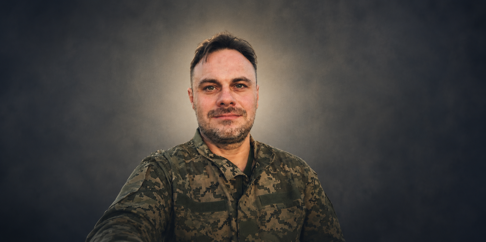

В тяжку годину люди все більше переходять із прози на вірші.
Недаремно гадають, що рима старіша за просто розмову.
Бо ти можеш кричати, стогнати, римувати –
інакше відніме мову.
Бо не можеш вже більше вигнати тугу і біль із душі,
бо душа твоя більше особисто тобі не належить.
Бо змішалося все: сльози, вибухи, сміх, вірність,
гнів і любов.
І надія. І нежить.
Максим Михайленко • позивний Salva • 1977 - 2024
Поет • Художник • Письменник
Вірші
Про Максима
Максим Михайленко (1977–2024) — український поет, художник, письменник, інженер та воїн.
Народився в Луганську, де пройшли його дитинство і молодість. З ранніх років захоплювався літературою, музикою та малюванням. Працював у сфері телекомунікацій, створив родину, виховував двох дітей.
Під час Революції Гідності був активним учасником Луганського Євромайдану.
Після окупації рідного міста разом із сім’єю переїхав до Чернігова, який став його другою домівкою.
Восени 2023 року вступив до лав Збройних Сил України. Служив у медичній роті евакуаційної бригади та рятував життя побратимів.
Загинув 29 березня 2024 року, захищаючи Україну на рідній Луганщині.
На цьому сайті зібрано його вірші, картини, рукописи, фотографії та спогади про людину, яка залишила по собі світло,
творчість і любов до України.
Творчий доробок
Максим автор збірки поєзій "Я буду твоїм свідком" як складається більш ніж 100 віршів.
Здійснив віршований переклад з давньоскандинавської мови першої пісні Старшої Едди "Віщування Вьольви" (Völuspá).
Автор декількох недописаних романів, повістей і оповідань, а також десятнків малюнків і картин.
Вірші
Тут можна зібрати окремі вірші або дати посилання на повну збірку у PDF.
Проза та недописані романи
Для незавершених текстів добре підійде окремий розділ із поясненням контексту.
Картини та малюнки
Можна зробити галерею з короткими підписами: рік, техніка, історія створення.
Архів матеріалів
Сюди можна додати інтерв'ю, листи, спогади друзів, аудіо, відео, публікації.
Світлини та роботи
Тут можуть бути фото з життя, портрети, картини, малюнки, сторінки рукописів.